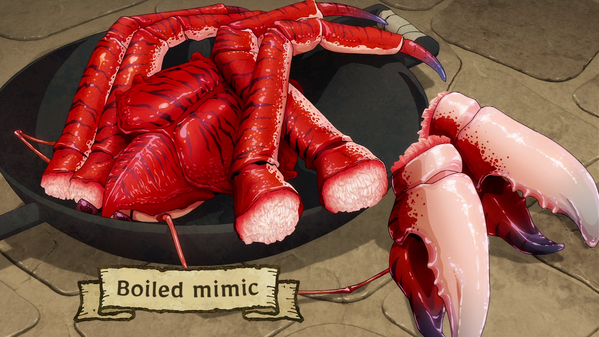

A simple dish prepared from a mimic. It's eaten like any other shellfish, using thin tools to dig out the chewy,
flavorful meat. Serves 4.
Ingredients:
- Mimic upper body (1)
- Claws (1 pair)
- Legs (4)
- Salt (lots)
How to cook:
- Boil plenty of water and add salt.
- Place the mimic inside and cover it with a lid. Wait a while.
- When its shell is a bright red, it's done.